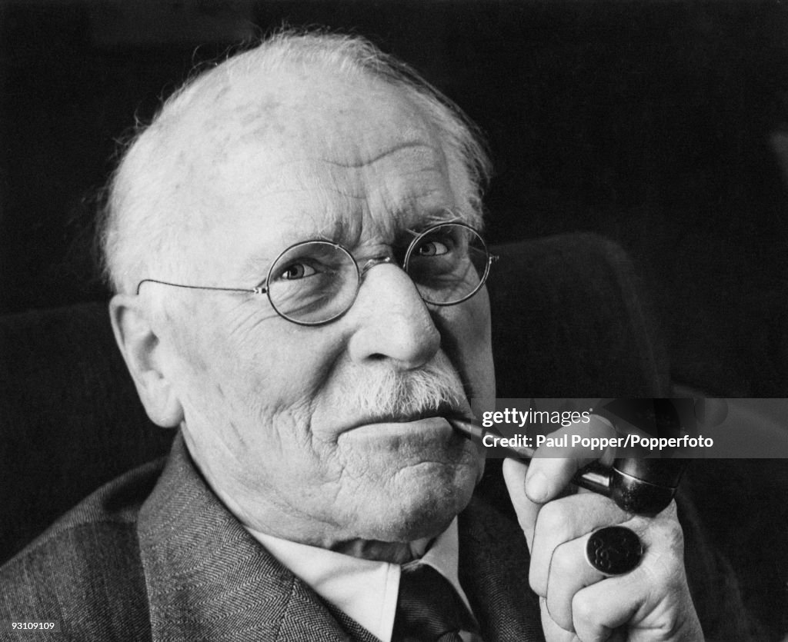

目前使用人数众多的人格测试，被广泛应用于职业发展及恋爱社交等领域
你是E人还是I人呢？
推荐完整版，点击开始测试
MBTI（Myers-Briggs Type Indicator）性格测试是基于瑞士心理学家卡尔·荣格（Carl Jung）的心理类型理论， 由美国作家伊莎贝尔·布里格斯·迈尔斯（Isabel Briggs Myers）和她的母亲凯瑟琳·库克·布里格斯（Katharine Cook Briggs）共同开发的一套性格分类理论。

瑞士心理学家，心理类型理论创始人
美国作家，MBTI测试主要开发者
外向 / 内向
感觉 / 直觉
思考 / 情感
判断 / 知觉
建筑师
思想家
指挥官
辩论家
提倡者
竞选者
主人公
调停者
物流师
守卫者
总经理
执政官
鉴赏家
探险家
企业家
娱乐家
凯瑟琳·布里格斯开始研究性格类型分类理论
伊莎贝尔·布里格斯·迈尔斯加入母亲的理论开发工作
MBTI测试开始在美国企业和教育机构中试用
第一版MBTI手册正式出版，标志理论体系成熟
CPP（Consulting Psychologists Press）公司成立，专门推广MBTI
MBTI测试在全球范围内广泛应用，成为最流行的性格测试工具之一
MBTI测试全面数字化，提供更便捷的在线测试体验